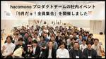
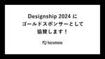
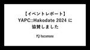

hacomono TECH BLOG
https://techblog.hacomono.jp/
フィットネスクラブやスクールなどの顧客管理・予約・決済を行う、業界特化型SaaS「hacomono」を提供する会社のテックブログです！
フィード

hacomonoプロダクトチームの社内イベント「9月だョ！全員集合」を開催しました🎊
hacomono TECH BLOG
はじめに こんにちは！ 株式会社hacomonoの Engineering Office でアシスタントをしているみーこです。 hacomonoはフルリモート勤務の企業。 とはいえオフラインでの集まりも大切にしており、年間を通じて大小さまざまなイベントを開催しています。 そのなかで最も大きなイベントが、全社イベントのhacofes。 そしておそらく2番目に大きいであろうイベントが9月の終わりに開催されました。 そう、それがプロダクトチームの社内イベントである 「9月だョ！全員集合」！ 「全員集合」is 何？ いつもはフルリモートの私たちだからこそ、イベントのときはオンラインとのハイブリッド開催…
4日前
hacomonoにSRE文化を取り入れる為にSLOダッシュボードを創設した話 1
1
hacomono TECH BLOG
はじめに 初めまして。SRE部のiwachan(@Diwamoto_)です。 hacomonoには2024年の1月に入社しました。もう半年過ぎてて時間が早く感じます。 最近は5ヶ月になった娘を絶賛溺愛しています。 徒歩0分で娘の顔を見れる点はリモートワークの利点の一つですね。 また、Xで溢れている地面師ネタを理解したく、やっとNetflixに加入して「地面師たち」を全部見ました。ひとまず今年1番面白かったです。 TL;DR SLO文化を醸成するためにダッシュボードを展開したよ そのおかげで潜在的なバグを発見したよ かなり安くできたよ ここまで来るのにSLO本が本当に助けになったからみんなも読ん…
11日前

Designship 2024 にhacomonoがゴールドスポンサーとして協賛します！
hacomono TECH BLOG
こんにちは！株式会社hacomonoの Engineering Office でアシスタントをしているみーこです。 10月12日･13日に開催されるイベント、Designship 2024についてのお知らせです。 Designship 2024とは？ Designshipは最前線のデザインを学び、第一線のデザイナーと語り合う年に一度のデザインの祭典であり、日本最大級のデザインカンファレンスです。 今年のコンセプトは 「広がりすぎたデザインを、接続する。」 design-ship.jp イベント概要 日程 ▶ 2024年10月12日（土）、10月13日（日） 開催方法 ▶ オフライン・オンライン…
11日前

【イベントレポート】YAPC::Hakodate 2024 に協賛しました 2
hacomono TECH BLOG
こんにちは、hacomono QAの森島です。 hacomonoは10月5日(土)開催の YAPC::Hakodate にPlatinum Sponsorとして協賛&現地ブース出展しました。 この記事では現地会場やスポンサーブースの様子などをお届けいたします。 YAPC::Japan への協賛は YAPC::Hiroshima 2024 に引き続き2回目となります。 私自身は初めてのYAPCへの参加となりますが YAPCというと「Perlのイベント」というイメージがあり、本当に参加しても大丈夫だろうか？という一抹の不安がありましたが 実際に参加してみるとそんな不安なんか感じる暇がない程に全力で…
12日前

大企業と比較したhacomonoエンジニアの働き方
hacomono TECH BLOG
インテグレーションチームでエンジニアをしているひらゆーです。 2023年5月に入社してはや１年と少しが経ち、hacomonoエンジニアとしての働き方が徐々にわかってきたため、前職で僕が経験した大企業での働き方とそれぞれ比較をしてみようと思います。 前職 僕が前職で勤めていた会社はグループ全体で5万人以上、エンジニアチームも複数あり僕が所属していた部署のエンジニアだけでも70人ほどの規模でした。毎年新卒を数百人規模で採用しており人の入れ替わりも多かった印象です。 そんな企業の中で僕は人材系のポータルサイトの一部機能を開発しており、メインはバックエンドでたまにフロントエンドの開発も担当していました…
15日前
QAEが新規プロジェクトで、はじめにやったこと
hacomono TECH BLOG
こんにちは、hacomonoQA部のたっきー（滝田）とゆう（田中）です。 2024年8月より新規機能開発のプロジェクトが立ち上がり、QAE（QAエンジニア）として参画しました。 プロジェクト初期段階にQAEとして取り組んだ事柄を紹介します。 プロジェクト参画前に QA部として、アジャイルテストを取り入れていくという目標を立てていました。 このタイミングで新規プロジェクトに参画することになったため、従来のやり方に捉われず、テストおよび開発フローの改善にアプローチすることにしました。 開発フロー改善 開発フローの改善については要素が多いため、今回は「テスト」に焦点を当てます。 以前の開発フローはこ…
18日前
YAPC::Hakodate 2024 にhacomonoがプラチナスポンサーとして協賛します！
hacomono TECH BLOG
こんにちは！株式会社hacomonoの Engineering Office でアシスタントをしているみーこです。 10月5日に開催されるイベント、YAPC::Hakodate 2024についてのお知らせです。 YAPC::Hakodate 2024とは？ YAPCはYet Another Perl Conferenceの略で、Perlを軸としたITに関わる全ての人のためのカンファレンスです。 Perlだけにとどまらない技術者たちが、好きな技術の話をし交流するカンファレンスで、技術者であれば誰でも楽しめるお祭りです！ yapcjapan.org イベント概要 日程 ▶ 2024年10月5日（土…
22日前
ペアワークがすごいワークしてワクワークした話
hacomono TECH BLOG
はじめに 開発本部 フィーチャー部 会計・決済グループのかいです。 会計・決済と一括りにしていますが、主に担当しているのは決済領域です。 特にクレカ決済に関する機能開発が多く、日々奮闘しております。 さて、ふざけたタイトルから始まりましたが、本記事では決済領域の開発にペアワークを取り入れたことで良い感じに運用回ったよ！という体験についてご紹介いたします。 ペアワークって何？ 「ペアワーク」とは名前の通り、二人一組で作業を行うことを指します。 （3人以上になると「モブワーク」と呼ぶそうです。） エンジニアの方であれば「ペアプロ（ペアプログラミング）」という言葉を聞いたことがある方が多いと思います…
25日前
5 分くらいで考えた架空のフロントエンドフレームワークの言語サポートを vscode 拡張で作ってみた
hacomono TECH BLOG
お久しぶりです, みゅーとんです. だいぶ執筆しない期間がありましたが, 年明け 1 月に大量に書いていたので, その反動ということで許してください. 本テックブログのニッチな記事担当になりつつあるなぁという自覚がありまして. 今後, 基礎とか応用とかは他の人にネタを提供しつつ, 私はさらなる開発オタク向けコンテンツを提供する方針で書いていこうかなと思います. 概要 対象読者 vscode など, リッチめな IDE の利用経験がそれなりにある フロントエンド開発の経験がすでにある人 特に, Vue.js, svelte, astro 3 行でまとめ Vue.js, astro のような独自拡…
1ヶ月前
mabl メール検証をMailbox機能に置き換えた話
hacomono TECH BLOG
こんにちは！SETチームの塩濱です。 hacomonoではニックネーム文化なのではまちゃんと呼ばれております。 今回はhacomonoで活用しているE2Eの自動化ツール、mablでメールの確認導線を自作API→mablのオプションであるMailBox機能に置き換えた話を書いていきたいと思います。 MailBox機能自体が気になる方は、mablの記事も貼り付けておきますので気になる方はこちらもどうぞ。 help.mabl.com 置き換える前の状態 hacomonoにはメールを送信する機能が備わっており、正しい文章でメールが送られたかどうかの確認をする必要があります。 mablでのMailBox…
1ヶ月前
大手製造業からSaaS企業のエンジニアへ転職してみて
hacomono TECH BLOG
はじめに 初めまして！基盤本部/プラットフォームグループの kaikai こと有働開と申します！ ７月に入社してこの記事が出る頃には勤務 3 ヶ月目に突入しています。(早い・・・) 今回は入社エントリということで、入社前の思いと入社後 2 ヶ月間働いてみてどうだったのかなどについてお話しさせていただければと思います！！ 入社までの経緯 私は新卒で大手製造業に入社し、2 年目まで社内制度の研修でプログラミングや AI、ネットワークなどの IT 基礎を学ばせていただきました。 社会人になるまで IT はなんとなく怖いものだったのですが、前職のおかげで IT 技術や技術に対する考え方、プログラミング…
1ヶ月前
HAPPY🎉 1st Anniversary 運用保守部
hacomono TECH BLOG
運用保守部のマネージャのよこちゃん(@jikun)です。 早いもので運用保守専門部署を立ち上げて8/1で丸1年経過しました 運用保守部としての最初のテックブログの投稿からは10ヶ月です（こちら） 本当にあっという間でしたが、当時小6の息子が中1になったことによる変化を考えると長い年月だったのかもなとも思います。 そんな運用保守部の1年についてお伝えいたします！ 数字で見る運用保守部の成長 社員数 2人 → 9人 Capacity 社内外の問い合わせ回答率 43% → 70〜80% Capability 社内外の問い合わせ プロダクト改善チケットの対応 社員向け生産性向上を目的とした開発 お客様…
2ヶ月前
UXチームの開発にスクラムエッセンスを取り入れてみた
hacomono TECH BLOG
こんにちは。hacomono UX部エンジニアの do です。 私が所属するUXチームでは、今年の4月頃からスクラムエッセンスを開発に取り入れ始めたので、その背景やチームに起きた変化をご紹介したいと思います。 💡 スクラムエッセンス？ スクラムではなく、スクラムエッセンスと称しているのは、完全にスクラムのフレームワークに沿っていないためです。スクラムの3本柱（「透明性」「検査」「適応」）や価値基準を取り入れつつ、スラクムイベントをチームの状況に合わせて取捨選択する形で少しアレンジしています。スクラムについての詳細は スクラムガイド をご参照ください。 スクラムエッセンスを取り入れようと思った背…
2ヶ月前
QA部全員で取り組むカイゼンの仕組み
hacomono TECH BLOG
こんにちは、hacomono QA部SETチームの森島です。 QA部では隔週に1時間「Kaizen MTG」と称して課題や改善したいことを募り、議論を通して改善案を決めて実行する仕組みを運用しています。 今回はそのKaizen MTGをどうやって運用しているか、実際にどんな課題・事象を扱っているかを踏まえて紹介します。 現在QAメンバーが各プロダクトチームに専属でアサインされている体制になりましたが、Kaizen MTGの取り組みはQAメンバーが各チームにアサインされる体制になる前から取り組んでいました。 現在も変わらずQAという括りでこの改善活動が続いています。 Kaizen MTGの運用 …
2ヶ月前
WEB系スタートアップにおけるハードウェア開発プロセス その１
hacomono TECH BLOG
はじめに こんにちは、hacomonoのIoT部Bizdevグループでリーダーをしているしゅほりんです。 hacomonoはWEB系出自のスタートアップの中では珍しい「ハードウェア内製開発」を行っています。 私自身ハードウェアが主体のメーカーでの事業経験が多いため、hacomonoのようなSaaSを主体とした組織の中でどのようにハードウェアプロダクトを爆速でローンチに持っていくかについては試行錯誤している最中です。 ソフトウェアとハードウェアの融合を謳った「IoT」といった用語は広く行き渡ってきた感触がありますが、その大半を占めるのが「ハードウェアをメインでやってきたメーカーが、その開発プロセ…
2ヶ月前
QA部のとあるチームのテストプロセス改善のお話
hacomono TECH BLOG
こんにちは、QA部のまっちゃんこと松田です！ 今回は私のチームで取り組んでいるテストプロセス改善について紹介します。 はじめに これまで私の所属するチームで行っているテストでは手動によるブラックボックステストのみ行っていました。ひと通りの機能実装の後にテスト実施に着手する流れとなっていました。 具体的な流れは、以下のようになっていました。 機能実装が完成 画面上で対象機能のテストを行う また、複数の機能を同時開発している場合は、下図の流れで開発とテスト実施していました。 以下の課題を感じていました。 機能実装の完成を待つことによるテスト着手のリードタイムが長くなっている テスト対象が大きくなる…
2ヶ月前
QAチームのオフライン成果発表会（懇親会）に潜入しました！
hacomono TECH BLOG
まえがき こんにちは、hacomono Engineering Office りゅうほです！ hacomonoは日本各地からフルリモートで働いていますが、オフラインで会う機会も同じくらい大事にしており、オフライン活動を推進する制度を用意しています。 その名も「各部チームビルディング制度」。 年2回以上のオフラインでのチームビルディングを推進し、1人当たり1万円ほど支援をしています。 今回は、このチームビルディング制度を利用したQAチームの成果発表会 兼 懇親会に潜入してみました！ 場所はhacomono原宿オフィスのセミナールーム。開始時間が近づくにつれ、続々と人が集まってセミナールームは満員…
2ヶ月前
とあるSREのチームビルディングDay
hacomono TECH BLOG
はじめに こんにちは、hacomono で SRE リーダーをしているありかわです。 今年の夏も猛暑すぎて毎日夏バテで引きこもり生活をしています。昔はこんな気温の中を毎日通勤してたんだなと思うと体力の衰えを感じている今日この頃です。 さて、今回はフルリモートである hacomono のオフラインイベントや新しく新設された制度、SRE 内でチームビルディングをした日の様子を紹介していきたいと思います。 新たなメンバーを迎えて 2024年から hacomono のSREチームに3名の新メンバーが加わっています。昨年末にかけての採用活動が大成功を収めた結果、20代、30代、40代から1名ずつと幅広い…
3ヶ月前
hacomono 流 RSpec ルール、ちょっと覗いてみませんか？ 👀
hacomono TECH BLOG
こんにちは。hacomono インテグレーション部でエンジニアをやっています htz (ひつじ) です。 引き続きエンジニアリングマネージャとして有りながらも、開発や改善活動にも積極的に取り組んでおり、今回はその中でも RSpec に焦点を当ててご紹介させていただきます。 はじめに 以前の記事で hacomono の Rails プロダクトにおける改善の取り組みについてご紹介させていただきましたが、主にテストを中心の改善として テストに関するルールや方針の整備 単体テストの充実 CI 時間の短縮 という 3 本柱で取り組んでいます。その中でも今回は「テストに関するルールや方針の整備」について紹…
3ヶ月前
開発設計レビューを定例化してみた
hacomono TECH BLOG
こんにちは、hacomono開発本部フィーチャー部フィーチャーチームのすがじゅんです。 私の所属するフィーチャー部では直近、開発設計レビューを定例化したので今回はそのお話をしたいと思います。 いままでどのようにレビューしていたか これまでフィーチャーチームでは中規模開発（社内では中玉案件と呼んでいます）以上では必ず設計レビューを実施しようね、という流れになっていました。 中玉の開発担当になったメンバーは設計と設計書作成を行い、各メンバーの予定を確認してMTGの場を設置し、1時間程度でgoogle meetやslackのハドルミーティングでレビュー会を実施していました。 何が問題だったか 社内に…
3ヶ月前
リアーキテクチャ&イネーブルメント部を立ち上げました/リファクタリング取り組み事例紹介
hacomono TECH BLOG
2024/07/01よりVP of CTO Officeとなったよこちゃん（@jikun）です。 hacomonoでは開発組織全体の横断課題に取り組んでましたが、今後はより経営課題を意識して行きたいと思っています。 技術的負債解消のための専門チームを作ろう！ hacomonoでは、元々イネーブルメントチームがあり、バックエンドのスペシャリストのiwazerさん（@iwazer）とフロントエンドのスペシャリストのみゅーとん（@_mew_ton）の2名体制でした。 しかし二人とも日々多くの差し込み依頼に忙殺され、また開発チームが忙しすぎるなどイネーブルメントで何とかしていくことの限界を感じていまし…
3ヶ月前
hacomonoデータ基盤におけるデータ転送の課題と今後の対応
hacomono TECH BLOG
こんにちは。hacomono データ基盤部のうまちゃん ( @i9wa4_ ) です。 hacomono データ基盤におけるデータ転送の課題と今後の対応の話を通じて hacomono のデータ基盤部の業務内容の一部をお伝えできればと思います！ hacomono データ基盤のデータ転送システム構成 Embulk で hacomono 環境の Amazon RDS もしくは Amazon Aurora のデータを抽出しお客様環境の BigQuery へ転送する構成となります。 データ転送システム全体は GitHub・Terraform で管理しています。 hacomono データ基盤におけるデータ…
4ヶ月前
【イベントレポート】Scrum Fest Osaka 2024 に協賛しました
hacomono TECH BLOG
こんにちは、hacomono QAの森島です。 hacomonoは、6月21日〜22日開催のScrum Fest Osaka 2024にPlatinum Sponsorとして協賛&現地ブース出展してきました。 この記事では、現地会場やスポンサーブースの様子、スポンサーセッションの紹介など2日間の様子をお届けいたします。 スクラムフェスへの協賛はスクラムフェス新潟2024に引き続き2回目となり 今回もたくさんの方と交流する機会をいただくとともに、参加者の熱気を浴びて我々もエネルギーをいただけました。 参加されたみなさまの学びや参加者同士の縁を繋ぐきっかけ作りに、少しでもhacomonoが貢献でき…
4ヶ月前
e-ラーニングで初めて効果を実感した話
hacomono TECH BLOG
こんにちは、運用保守部のちいです。 以前記事を書いたときはEngineering Officeの配属だったのですが、 今年の5月から開発部門の運用保守部配属になりました！ 今回のテーマはeラーニングです。 よく聞くのが、「覚えられない」、「頭に入らない」、「効果がない」… 私も今までに様々なタイプのeラーニングを受けてきましたが どれも完了までに時間はかかるのに内容が右から左へ流れてしまうものが多く、 途中でダレてきてしまうことも多々… しかし、今回受けたhacomonoの社内向けeラーニングが 個人的にとても効果を感じたためご紹介したいと思います。 この記事では特に、以下の方々をターゲットと…
4ヶ月前
開発生産性Conference 2024にhacomonoがブロンズスポンサーとして協賛します！
hacomono TECH BLOG
こんにちは！ 株式会社hacomonoの Engineering Office でアシスタントをしているみーこです。 6月28日・29日に開催されるイベント、開発生産性Conference 2024についてのお知らせです。 開発生産性Conference 2024とは？ エンジニア不足が叫ばれるなか、開発生産性が今注目を集めています。 開発生産性Conferenceは、 海外・日本の開発生産性に関する最新の知見が集まり、 各企業のベストプラクティスや開発生産性向上への取り組みを通して、日本のエンジニアリングの向上につながることを目標とします。 昨年7月の開催では、“開発生産性とは何か” をテー…
4ヶ月前
ドラッカー風エクササイズでチームを安全な状態にする
hacomono TECH BLOG
はじめに こんにちは。hacomono UX部エンジニアのyasuです。 今年の3月からUX部とリアーキテクチャ&イネーブルメント部が連携し、フロントエンドの開発基盤を刷新するために発足した新プロジェクトにおいて「ドラッカー風エクササイズ」と呼ばれるチームビルディングを実施したので、実施に至るまでの背景や成果などをお伝えしたいと思います。 ドラッカー風エクササイズとは？ 自分の強みを活かすための方法や時間の有効活用など、経営学者のピーター・ドラッカーの思想や理論をベースに『アジャイルサムライ』の筆者が提唱したチームビルディングの手法の一つです。 次の4つの質問に回答する形で相互理解を深め、メン…
4ヶ月前
スクラムフェス大阪2024にhacomonoがプラチナスポンサーとして協賛します！
hacomono TECH BLOG
こんにちは！ 株式会社hacomonoの Engineering Office でアシスタントをしているみーこです。 6月21日・22日に開催されるイベント、スクラムフェス大阪2024についてのお知らせです。 スクラムフェス大阪とは？ Scrum Fest Osakaはスクラムの初心者からエキスパート、ユーザー企業から開発企業、立場の異なる様々な人々が集まる学びの場です。 この2日間を通じ、参加者同士でスクラムやアジャイルプラクティスについての知識やパッションをシェアするだけでなく、ここで出会ったエキスパートに困りごとを相談することもできます。 www.scrumosaka.org イベント概…
4ヶ月前
Rubyでアスキーアートプログラムを作ってみた
hacomono TECH BLOG
こんにちは。 hacomonoでスクール向け機能を開発している山下です。 先月のRubyKaigiは楽しかったですね！ 私も4年ぶりに参加し、満喫することができました。 移動の関係で残念ながら初日のセッションは聞くことができませんでしたが、私の周りではWriting Weird Codeが面白かったという声が多く、来年はTRICKも開催されるということで、奇妙なコードに興味が出てきました。 エントランスにあったWeird Code ということで自分でも試してみたいと思ったのですが、普段はなかなか馴染みがないため、まずは入門ということでアスキーアートでプログラミングをやってみました。 アスキーア…
4ヶ月前
RubyKaigi 2024 エンジニアのセッションレポートをお届けします！
hacomono TECH BLOG
こんにちは。 hacomono Engineering Office の りゅーほ @rh1011_ です。 hacomonoは、先月沖縄・那覇で開催されたRubyKaigi 2024にプラチナスポンサーとして協賛をさせていただきました。 また多くのエンジニアと一緒に現地参加をしてきましたので、この記事ではRubyKaigi 2024に参加したエンジニアのセッションレポートをお届けします。 [Day1] Unlocking Potential of Property Based Testing with Ractor speakerdeck.com ▼フィーチャー部 pei（三瓶） Smart…
4ヶ月前
PythonでMacアプリつくってみた
hacomono TECH BLOG
はじめに こんにちは、IoTチームの組み込みソフトウェアエンジニアのとりーです。 1年に1回くらいカッとなってなにか作ったりするのですが、先日は某ゲームに出てくるロボットをつくりました。 画用紙とマスキングテープと水糊で作ったのですが、紙に水糊はだめですね… 水糊でひっつけたところがたわんでしまいました。 3Dプリンタがほしい、かも。 さて今回はまたまたツールアプリについて書こうと思います。 PythonでMacアプリをつくる これまでは非エンジニア向けのアプリを作る場合、Xcodeを使ってMacアプリをつくっていました。 が、今回は事情がちょっと違うところがありまして。 具体的には下記のよう…
4ヶ月前